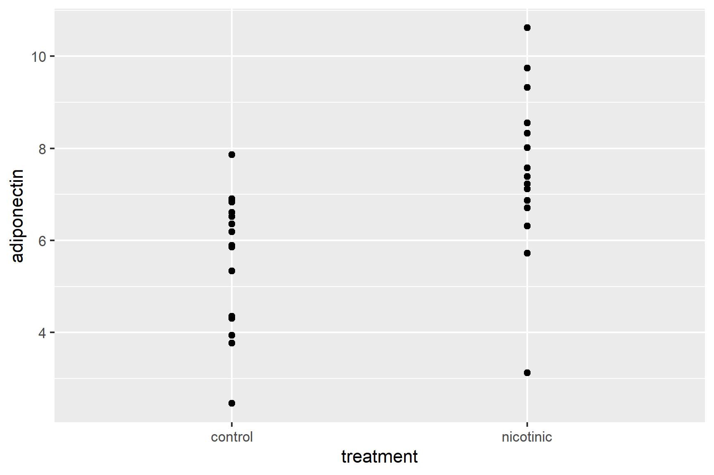

8 From importing to reporting
You are reading a work in progress. This page is a first draft but should be readable.
In First Steps in RStudio we typed data into R. This is not very practical when you have a lot of data! Instead, we much more commonly import data from a file. In this chapter we go through the workflow from importing, through summarising and plotting to saving a saving the figure.
8.1 Importing data from files
. This requires you know two pieces of information.
-
What format the data are in
The format of the data determines what function you will use to import it and the file extension often indicates format.
-
.txta plain text file1, where the columns are often separated by a space but might also be separated by a tab, a backslash or forward slash, or some other character -
.csva plain text file where the columns are separated by commas -
.xlsxan Excel file More detail on file types was covered in Understanding file systems
-
-
Where the file is relative to your working directory
Rcan only read in a file if you say where it is, i.e., you give its relative path. More detail on relative file paths and working directories was covered in Understanding file systems
🎬 Your turn! If you want to code along you will need to start a new RStudio project then a new script.
This chapter covers reading .txt files and .csv files using tidyverse (Wickham et al. 2019) functions and excel files using the readxl (Wickham and Bryan 2023) package. We will demonstrate what needs to be done differently if the file is not in your working directory.
8.1.1 Importing data from .txt file
The data in adipocytes.txt give the concentration of a hormone called adiponectin in some cells. There are two columns: the first gives the adiponectin concentration and the second, treatment, indicates whether the cells were treated with nicotinic acid or not. Save this file to the project folder.
A .txt extension suggests this is plain text file with columns separated by spaces. However, before we attempt to read it in, when should take a look at it. We can do this from RStudio by clicking on the file in the Files pane. Any plain text file will open in the top left pane.

The files are separated by spaces as we suspected. We use the read_table() command to read in plain text files of single columns, or where the columns are separated by spaces:
cells <- read_table("adipocytes.txt")The data from the file has been read into a dataframe called cells. You will and you will be able to see it in the Environment window. Clicking on it in the Environment window will open a spreadsheet-like view of the dataframe.
8.1.2 Importing a from a.csv file
The data seal.csv give the myoglobin concentration of skeletal muscle for three species of seal. There are two columns: the first gives the myoglobin concentration and the second indicates species.
The .csv extension suggests this is plain text file with columns separated by commas. We will again check this before we attempt to read it in. Click on the file in the Files pane - a pop-up will appear for files ending .csv or .xlsx. Choose View File2.

CSV files will open in the top left pane (Excel files will launch Excel). We can see that the file does contain comma separated values. There is aread_csv() function which works very like read_table()[^working_with_data_rstudio-3]:
seal <- read_csv("seals.csv")
8.1.3 Importing a from a.xlsx file
The data in blood.xlsx are measurements of several blood parameters from fifty people with Crohn’s disease, a lifelong condition where parts of the digestive system become inflamed. Twenty-five of people are in the early stages of diagnosis and 25 have started treatment.
blood <- read_excel("blood.xlsx")8.1.4 Importing data from a file not in your working directory
When using an RStudio project, your working directory is in the project folder. Suppose our adipocytes.txt were in a folder, data-raw, in our working directory.
-- myproject
|__myproject.Rproj
|__import.R
|__data-raw
|__adipocytes.txt
|__blood.xlsx
|__seal.csvWe need to adjust the code to give the relative path to the datafile:
cells <- read_table("data-raw/adipocytes.txt")🎬 Your turn! Create a folder called data-raw inside the project folder and move the data files to it. Now modify the data import code to import seal.csv from data-raw.
Code
seal <- read_csv("data-raw/seal.csv")8.2 Summarising data
We summarise data using the the dplyr (Wickham et al. 2023) package, which provides a set of functions designed for efficient data manipulation. This is a tidyverse (Wickham et al. 2019) package which you already loaded. The approach replies on the data being in a tidy format, meaning each column represents a variable, each row represents an observation, and each cell contains a single value. The pipeline is:
Group the data: If you want to summarize your data based on certain groups, you can use the
group_by()Summarise: Once your data grouped (if necessary), you use
summarise()with functions likemean(),median(),sd(),min()andmax()within it.
We will demonstrate summarising using the cells dataframe. adiponectin is the response and is continuous and treatment is an explanatory with categorical with two levels (groups).
The most useful summary statistics for a continuous variable like adiponectin are the means, standard deviations, sample sizes and standard errors. We use the group_by() and summarise() functions along with the functions that do the calculations.
To create a data frame called cell_summary that contains the means, standard deviations, sample sizes and standard errors for the control and nicotinic acid treated samples:
You can type:
cell_summary
## # A tibble: 2 × 5
## treatment mean std n se
## <chr> <dbl> <dbl> <int> <dbl>
## 1 control 5.55 1.48 15 0.381
## 2 nicotinic 7.51 1.79 15 0.463or click on environment to open a spreadsheet-like view of the dataframe.
8.2.1 Visualise data
Most commonly, we put the explanatory variable on the x axis and the response variable on the y axis. A continuous response, particularly one that follows the normal distribution, is best summarised with the mean and the standard error. In my opinion, you should also show all the raw data points if possible.
We are going to create a figure like this:

8.2.1.1 ggplot2
ggplot2 (Wickham 2016) is a powerful data visualisation package in R that is part of the tidyverse. It provides a flexible and layered approach to creating high-quality and customizable graphics.
The core concept of ggplot2 is to build a plot layer by layer. The basic structure consists of three main components:
- Data: the data frame to be used for plotting.
- Aesthetic mappings (aes): how variables in the data map to visual elements such as x and y positions, colours, shapes, etc.
- Geometric objects (geoms): the actual graphical elements used to visualize the data, such as points, lines, bars, etc.
To create a basic plot, you start with the ggplot() function and provide the data and aesthetic mappings.
ggplot(data = cells, aes(x = treatment, y = adiponectin))
You can add geometric layers to the plot using specific functions such as geom_point(), geom_line(), geom_bar(), etc. These functions define the type of plot you want to create:
ggplot(data = cells, aes(x = treatment, y = adiponectin)) +
geom_point()
In the figure we are aiming for, we are plotting two dataframes: the cells dataframe which contains the data points themselves; and the cell_summary dataframe containing and the means and standard errors.
The dataframes and aesthetics for ggplot can be specified within a geom_xxxx (rather than in the ggplot()). This is very useful if the geom only applies to some of the data you want to plot.
ggplot()
I will build the plot up in small steps you should edit your existing ggplot() command as we go.
We will plot the data points first. Notice that we have given the data argument and the aesthetics inside the geom_point(). The variables treatment and adiponectin are in the cells dataframe
ggplot() +
geom_point(data = cells,
aes(x = treatment, y = adiponectin))
So the data points don’t overlap, we can add some random jitter in the x direction (edit your existing code):
ggplot() +
geom_point(data = cells,
aes(x = treatment, y = adiponectin),
position = position_jitter(width = 0.1, height = 0))
Note that position = position_jitter(width = 0.1, height = 0) is inside the geom_point() parentheses, after the aes() and a comma.
We’ve set the vertical jitter to 0 because, in contrast to the categorical x-axis, movement on the y-axis has meaning (the adiponectin levels).
Let’s make the points a light grey (edit your existing code):
ggplot() +
geom_point(data = cells,
aes(x = treatment, y = adiponectin),
position = position_jitter(width = 0.1, height = 0),
colour = "grey50")
Now to add the errorbars. These go from one standard error below the mean to one standard error above the mean.
Add a geom_errorbar() for errorbars (edit your existing code):
ggplot() +
geom_point(data = cells, aes(x = treatment, y = adiponectin),
position = position_jitter(width = 0.1, height = 0),
colour = "grey50") +
geom_errorbar(data = cell_summary,
aes(x = treatment, ymin = mean - se, ymax = mean + se),
width = 0.3) 
We have specified the cell_summary dataframe and the variables treatment, mean and se are in that.
There are several ways you could add the mean. You could use geom_point() but I like to use geom_errorbar() again with the ymin and ymax both set to the mean.
Add a geom_errorbar() for the mean (edit your existing code):
ggplot() +
geom_point(data = cells, aes(x = treatment, y = adiponectin),
position = position_jitter(width = 0.1, height = 0),
colour = "grey50") +
geom_errorbar(data = cell_summary,
aes(x = treatment, ymin = mean - se, ymax = mean + se),
width = 0.3) +
geom_errorbar(data = cell_summary,
aes(x = treatment, ymin = mean, ymax = mean),
width = 0.2)
Alter the axis labels and limits using scale_y_continuous() and scale_x_discrete() (edit your existing code):
ggplot() +
geom_point(data = cells, aes(x = treatment, y = adiponectin),
position = position_jitter(width = 0.1, height = 0),
colour = "grey50") +
geom_errorbar(data = cell_summary,
aes(x = treatment, ymin = mean - se, ymax = mean + se),
width = 0.3) +
geom_errorbar(data = cell_summary,
aes(x = treatment, ymin = mean, ymax = mean),
width = 0.2) +
scale_y_continuous(name = "Adiponectin (pg/mL)",
limits = c(0, 12),
expand = c(0, 0)) +
scale_x_discrete(name = "Treatment",
labels = c("Control", "Nicotinic acid"))
You only need to use scale_y_continuous() and scale_x_discrete() to use labels that are different from those in the dataset. Often this is to use proper terminology and captialisation.
Format the figure in a way that is more suitable for including in a report using theme_classic() (edit your existing code):
ggplot() +
geom_point(data = cells, aes(x = treatment, y = adiponectin),
position = position_jitter(width = 0.1, height = 0),
colour = "gray50") +
geom_errorbar(data = cell_summary,
aes(x = treatment, ymin = mean - se, ymax = mean + se),
width = 0.3) +
geom_errorbar(data = cell_summary,
aes(x = treatment, ymin = mean, ymax = mean),
width = 0.2) +
scale_y_continuous(name = "Adiponectin (pg/mL)",
limits = c(0, 12),
expand = c(0, 0)) +
scale_x_discrete(name = "Treatment",
labels = c("Control", "Nicotinic acid")) +
theme_classic()
The ggsave() function is used to save a ggplot object as an image file. It provides a convenient way to export your plots to various file formats, such as PNG, PDF, SVG, or JPEG.
The basic syntax of ggsave() is as follows:
ggsave(filename,
plot,
device,
width,
height,
units,
dpi)You must give a file name for the output file but all the other options have defaults. - plot: The ggplot object you want to save. Defaults to the last created plot. - device: one of “png”, “eps”, “ps”, “tex”, “pdf”, “jpeg”, “tiff”, “png”, “bmp”, “svg†or “wmf†(windows only). Defaults to the format given by the file extension in filename - width, height units: Plot size in units (“in”, “cm”, “mm”, or “px”). Defaults to the size of the plot in the Plots window. - dpi: Plot resolution.
We can save the figure we just created as a 3 inch x 3 inch png file as follows:
ggsave("adipocytes.png",
device = "png",
width = 3,
height = 3,
units = "in",
dpi = 300)It is often a good idea to explicitly assign the ggplot object to a variable and use that in the ggsave()
fig1 <- ggplot() +
geom_point(data = cells, aes(x = treatment, y = adiponectin),
position = position_jitter(width = 0.1, height = 0),
colour = "gray50") +
geom_errorbar(data = cell_summary,
aes(x = treatment, ymin = mean - se, ymax = mean + se),
width = 0.3) +
geom_errorbar(data = cell_summary,
aes(x = treatment, ymin = mean, ymax = mean),
width = 0.2) +
scale_y_continuous(name = "Adiponectin (pg/mL)",
limits = c(0, 12),
expand = c(0, 0)) +
scale_x_discrete(name = "Treatment",
labels = c("Control", "Nicotinic acid")) +
theme_classic()
ggsave("adipocytes.png",
plot = fig1,
device = "png",
width = 3,
height = 3,
units = "in",
dpi = 300)(Wickham 2014) Tidy data - Each variable should be in one column. - Each different observation of that variable should be in a different row. - There should be one table for each “kind†of data. - If you have multiple tables, they should include a column in the table that allows them to be linked.